ich berüehr dich nöd
heilaufe
ohni linie
berüehre
ich stah
durchschnittlich
uf ca. 6 linie
pro 10 meter
uf mim heiwäg
so nebedbi …
han ich eigentli scho
verlore wel ich ufere
s-bahn linie bin?
ja
nei
hundelinie

dihei!
about
nils mäder
hfiad17
die site isch us de idee entstande
min heiwäg nomal wie es chind z laufe und
kei einzigi linie z berüehre. e interaktivi reis hei!